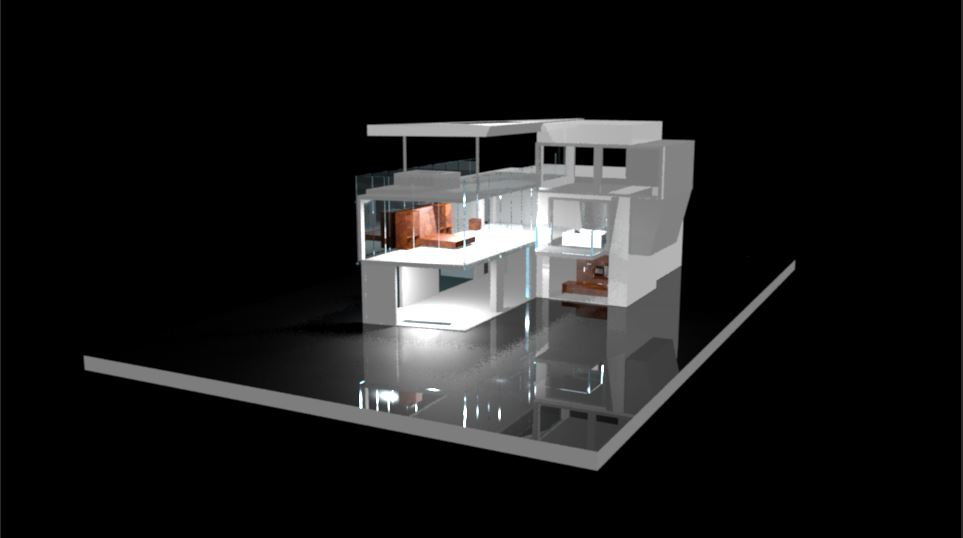
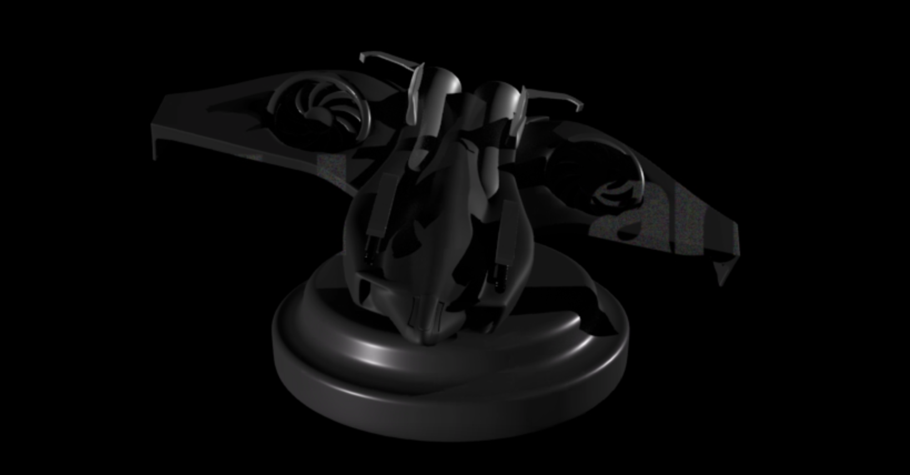
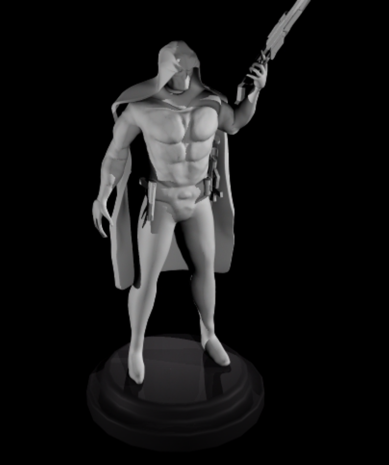
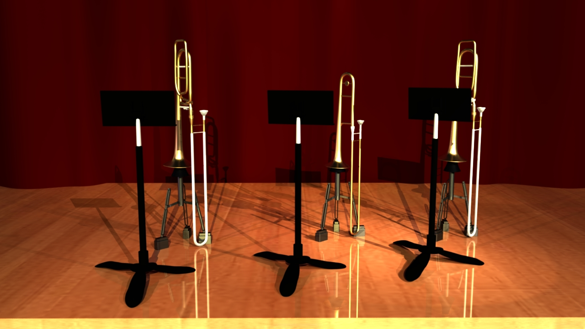
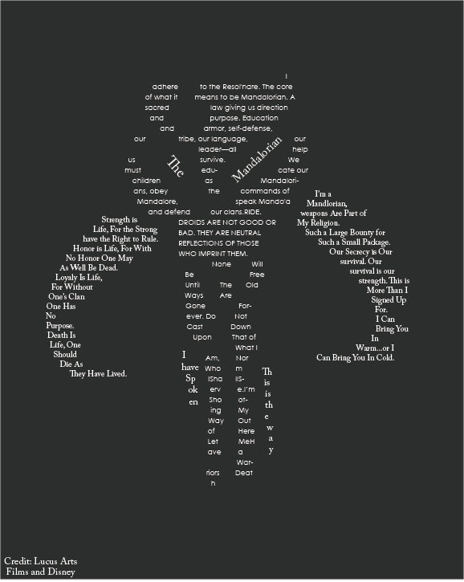

Hello, my name is Matthew Ciafone and this resume shows the skills I have learned over the years. I would love to use web design skills to build projects and give pages for my future projects.
Matthew has spent two years working on his graphic design skills varying from 2D to 3D softwares. I wish to learn to bring my creative side out and use my intuition to create and edit photos and videos I take in the future. I also wish to increase my skills in game design and use my knowledge of graphic design to make textures and help me understand the whole picture. I have have some experience with coding such as Javascript, C#, and HTML. I would love to learn more coding for more versatile skills. I wish to gather more skills and experiences to share with others and grow as a person.
the skills I have so far
These are scenes I have done over the years with 3D modeling with some graphic design mixed in.
    